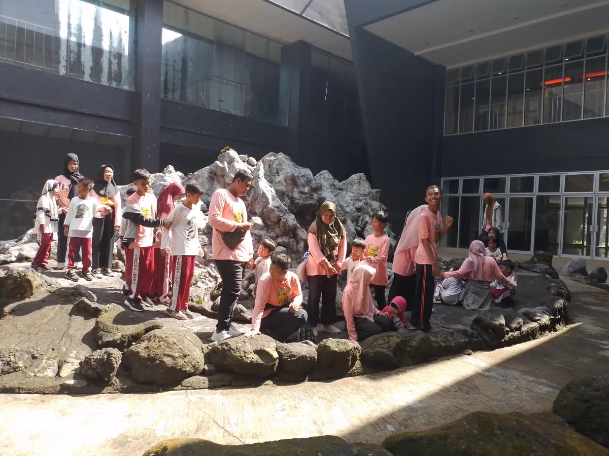
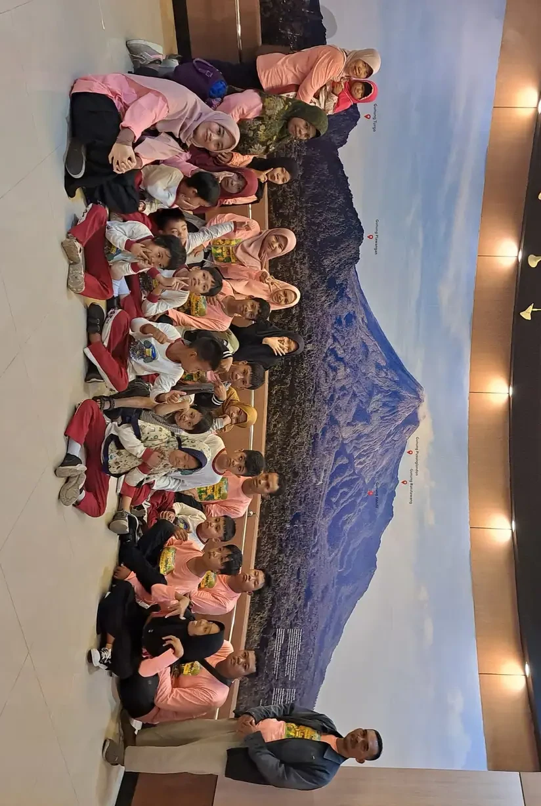
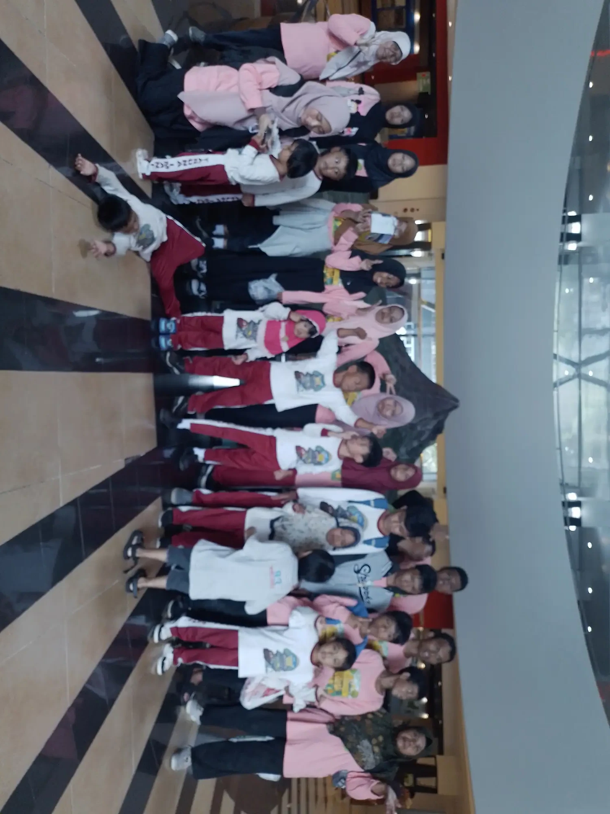
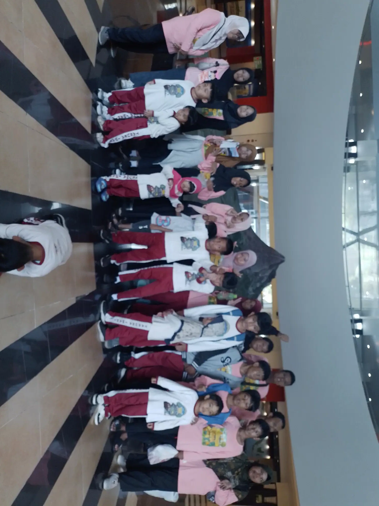

Jawaban singkat: terapi anak adalah layanan terarah untuk membantu anak mengembangkan, mempertahankan, atau menggunakan kemampuan yang dibutuhkan dalam kehidupan sehari-hari. Tujuannya bukan membuat semua anak mengikuti ukuran yang sama, melainkan meningkatkan fungsi, komunikasi, kenyamanan, kemandirian, dan partisipasi sesuai kebutuhan anak dan keluarga.
Daftar Isi
Apa yang Dimaksud Terapi Anak?
Terapi anak adalah rangkaian layanan yang membantu anak berlatih atau menemukan cara untuk melakukan aktivitas yang penting bagi dirinya. Aktivitas itu dapat berupa berkomunikasi, bergerak, bermain, makan, merawat diri, belajar, mengatur respons terhadap lingkungan, atau berpartisipasi bersama keluarga dan teman. Terapi dapat diberikan di klinik, rumah, sekolah, pusat rehabilitasi, atau ruang komunitas sesuai tujuan dan akses keluarga.
Istilah terapi tidak selalu berarti anak sedang sakit atau harus mengejar kemampuan anak lain. Anak mungkin membutuhkan dukungan untuk mengatasi hambatan tertentu, menggunakan alat bantu, mengubah lingkungan, atau memperoleh strategi komunikasi yang lebih mudah. Laporan WHO tentang perkembangan anak dan disabilitas menekankan bahwa layanan anak perlu berpusat pada anak dan keluarga, memperkuat partisipasi, serta menghubungkan kesehatan, rehabilitasi, pendidikan, dan dukungan sosial.
Karena kebutuhan setiap anak berbeda, tidak ada satu paket terapi yang cocok untuk semua. Dua anak dengan diagnosis yang sama dapat memiliki kekuatan, minat, cara berkomunikasi, kondisi medis, dan prioritas keluarga yang berbeda. Diagnosis dapat membantu memahami kebutuhan, tetapi tujuan terapi tetap perlu ditentukan dari fungsi nyata dan suara anak.

Untuk Apa Terapi Anak Dilakukan?
Tujuan terapi sebaiknya menjawab pertanyaan: aktivitas apa yang ingin lebih mudah dilakukan anak, dukungan apa yang membuatnya lebih nyaman, dan bagaimana keluarga mengetahui bahwa strategi tersebut membantu? Jawaban dapat berbeda untuk setiap anak. Misalnya, keluarga ingin anak dapat meminta bantuan dengan gambar, duduk lebih stabil saat makan, bergiliran ketika bermain, memakai pakaian dengan bantuan lebih sedikit, atau mengikuti rutinitas sekolah tanpa kelelahan berlebihan.
American Academy of Pediatrics menjelaskan bahwa terapi fisik, terapi okupasi, dan terapi wicara dapat membantu anak mengembangkan keterampilan baru, memperoleh kembali keterampilan yang hilang, atau menggunakan akomodasi ketika suatu keterampilan tidak dapat berkembang dengan cara yang diharapkan. Manfaatnya perlu dilihat dalam konteks kehidupan anak, bukan dari jumlah latihan atau lama sesi semata.
Tujuan juga dapat berupa pencegahan masalah sekunder dan peningkatan kenyamanan. Contohnya, pengaturan posisi membantu anak mengikuti kegiatan tanpa nyeri, strategi makan membantu mengurangi risiko tersedak sesuai arahan tenaga kesehatan, atau alat komunikasi membantu anak menyampaikan pilihan sebelum frustrasi meningkat. Terapi tidak boleh dijual dengan janji bahwa satu teknik akan menyembuhkan semua kondisi.
- Komunikasi: menyampaikan kebutuhan, memahami instruksi, memakai bahasa, gestur, gambar, atau alat komunikasi alternatif.
- Gerak dan posisi: berpindah, duduk, berdiri, berjalan, menggunakan tangan, atau mengatur posisi dengan lebih aman.
- Kemandirian: makan, memakai pakaian, kebersihan diri, menyiapkan perlengkapan, dan mengikuti urutan aktivitas.
- Regulasi dan partisipasi: menghadapi suara, sentuhan, perubahan, menunggu giliran, bermain, dan belajar bersama orang lain.
- Dukungan keluarga: memahami cara membantu anak tanpa mengambil alih semua tugas atau membuat rumah menjadi ruang latihan yang menekan.
Jenis Terapi yang Mungkin Dibutuhkan Anak
Jenis layanan dipilih setelah penilaian, bukan hanya karena sedang populer. Dokter anak, dokter tumbuh kembang, psikolog, guru, atau tenaga profesional lain dapat membantu menentukan rujukan. Dalam praktiknya, beberapa layanan dapat bekerja bersama karena satu aktivitas sering membutuhkan lebih dari satu kemampuan.
Terapi fisik atau fisioterapi
Fisioterapi berfokus pada gerak, kekuatan, keseimbangan, posisi, mobilitas, dan kemampuan menggunakan tubuh dalam aktivitas. Pada anak dengan cerebral palsy, keterlambatan motorik, kondisi neuromuskular, atau masalah ortopedi, tujuan dapat mencakup perpindahan yang lebih aman, penggunaan alat bantu, pencegahan kontraktur sesuai rencana klinis, atau partisipasi dalam bermain. Programnya harus menyesuaikan kondisi medis dan respons anak.
Terapi okupasi
Terapi okupasi membantu anak melakukan aktivitas sehari-hari yang bermakna. Fokusnya dapat mencakup koordinasi tangan, perawatan diri, bermain, kesiapan belajar, adaptasi alat, posisi duduk, serta cara mengatur lingkungan. Pada sebagian anak, terapis juga membantu keluarga memahami kebutuhan sensorik tanpa menganggap semua perilaku sebagai masalah yang harus ditekan.
Terapi wicara dan bahasa
Terapi wicara tidak hanya membahas pelafalan. Layanan ini dapat membantu pemahaman bahasa, ekspresi, komunikasi sosial, suara, kelancaran, atau makan dan menelan bila tenaga profesional memiliki kompetensi yang sesuai. Komunikasi alternatif dan augmentatif, seperti gambar, gestur, papan pilihan, atau perangkat, bukan tanda kegagalan. Yang penting adalah anak memiliki cara yang efektif untuk menyampaikan pesan.
Intervensi psikologis dan perilaku
Psikolog anak atau profesional terkait dapat membantu anak dan keluarga memahami emosi, perhatian, kecemasan, perilaku, hubungan sosial, atau penyesuaian terhadap perubahan. Pendekatan harus menjunjung martabat anak, menjelaskan tujuan, menghindari hukuman yang menyakiti, dan mengukur perubahan yang bermakna. Orang tua sebaiknya menanyakan dasar pendekatan dan cara persetujuan anak dihormati.
Dukungan pendidikan dan perkembangan
Sebagian kebutuhan lebih efektif ditangani melalui dukungan di sekolah, pendidikan khusus, pendampingan, modifikasi tugas, atau program intervensi dini. WHO menyebut layanan perkembangan anak dapat melibatkan permainan, latihan fungsional, edukasi orang tua, alat bantu, dan koordinasi rujukan. Karena belajar terjadi sepanjang hari, strategi yang dapat dipakai di rumah dan sekolah sering lebih berguna daripada latihan yang hanya terjadi di satu ruangan.
| Fokus kebutuhan | Contoh tujuan fungsional | Dukungan yang mungkin terlibat |
|---|---|---|
| Komunikasi | Meminta bantuan atau memilih aktivitas | Terapi wicara, AAC, strategi visual |
| Gerak dan posisi | Berpindah atau duduk lebih aman | Fisioterapi, alat bantu, adaptasi lingkungan |
| Kemandirian | Makan, berpakaian, atau merapikan barang | Terapi okupasi, latihan rutinitas, dukungan keluarga |
| Partisipasi | Mengikuti kegiatan belajar dan bermain | Koordinasi sekolah, keluarga, dan tenaga profesional |

Kapan Anak Perlu Dievaluasi?
Orang tua tidak perlu menunggu sampai masalah menjadi berat untuk berkonsultasi. CDC membedakan pemantauan perkembangan dan skrining perkembangan. Pemantauan dilakukan dengan mengamati kemampuan anak dari waktu ke waktu, sedangkan skrining menggunakan alat formal yang tervalidasi untuk melihat apakah diperlukan evaluasi lebih lanjut. Daftar milestone membantu percakapan, tetapi bukan alat diagnosis.
Buat janji dengan dokter atau layanan tumbuh kembang jika anak kehilangan kemampuan yang sebelumnya sudah dikuasai, tidak mencapai beberapa tonggak perkembangan, mengalami kesulitan yang mengganggu makan atau tidur, sering jatuh atau nyeri, sulit berkomunikasi, atau tampak sangat kewalahan dalam aktivitas rutin. Kekhawatiran orang tua sendiri sudah cukup menjadi alasan untuk meminta penilaian. IDAI juga menekankan pentingnya deteksi dan intervensi dini ketika ditemukan penyimpangan perkembangan.
Evaluasi tidak otomatis berakhir pada terapi mingguan. Hasilnya dapat menunjukkan bahwa anak cukup dipantau, membutuhkan adaptasi lingkungan, memerlukan pemeriksaan tambahan, atau perlu rujukan ke satu atau beberapa layanan. Mintalah penjelasan tentang apa yang ditemukan, apa yang belum dapat disimpulkan, dan kapan evaluasi ulang dilakukan.
Bagaimana Proses Penilaian Terapi Berjalan?
Penilaian dimulai dengan mendengarkan keluarga dan anak. Sampaikan kekhawatiran utama, rutinitas harian, aktivitas yang disukai, situasi yang memicu kesulitan, riwayat kesehatan, obat, tidur, makan, serta dukungan yang sudah dicoba. Video singkat yang dibuat dengan persetujuan anak dapat membantu menunjukkan situasi rumah, tetapi tidak perlu merekam atau menyebarkan data pribadi secara berlebihan.
Profesional kemudian mengamati kemampuan anak dalam konteks yang relevan. Penilaian dapat meliputi komunikasi, gerak, koordinasi, perilaku, sensorik, kemandirian, kemampuan bermain, dan partisipasi. Hasil observasi sebaiknya diterjemahkan menjadi tujuan yang dapat diamati, misalnya “anak meminta jeda dengan kartu” atau “anak memegang sendok selama lima menit”, bukan “anak menjadi normal”.
Rencana yang baik menjelaskan prioritas, frekuensi, siapa yang terlibat, cara latihan di rumah, indikator kemajuan, dan tanda bahwa strategi harus dihentikan atau diubah. Mintalah salinan ringkasan atau catatan tujuan. Jika beberapa layanan berjalan bersamaan, pastikan mereka tidak memberi instruksi yang bertentangan dan keluarga tahu siapa koordinator komunikasinya.
Peran Keluarga di Rumah
Keluarga bukan pengganti terapis, tetapi lingkungan keluarga adalah tempat anak memakai keterampilan sepanjang hari. Terapis dapat menunjukkan cara memberi kesempatan, menyederhanakan langkah, mengatur posisi, menggunakan pilihan visual, atau menyesuaikan alat. Terapkan hanya strategi yang dipahami dan terasa aman, lalu laporkan respons anak. Tidak perlu mengubah seluruh waktu bermain menjadi sesi terapi.
Pilih satu atau dua tujuan yang benar-benar penting bagi rutinitas. Bila targetnya memakai baju, latih satu bagian seperti menarik lengan atau memilih pakaian. Bila targetnya komunikasi, berikan waktu menunggu dan sediakan cara menjawab. Bila targetnya bermain bersama, mulai dari durasi pendek dan aktivitas yang disukai. Hargai penolakan, tanda lelah, dan kebutuhan jeda.
Catat tanggal, aktivitas, tingkat bantuan, durasi, respons, dan kondisi yang memengaruhi. Catatan sederhana membantu keluarga dan terapis membedakan perubahan nyata dari kesan sesaat. Jika anak tampak kesakitan, makin cemas, mengalami perubahan fungsi, atau menunjukkan tanda bahaya, hentikan strategi yang dicurigai dan hubungi tenaga kesehatan.

Cara Memilih Layanan Terapi Anak
Mulailah dari kebutuhan dan tujuan, bukan dari klaim paling besar. Tanyakan pendidikan dan kompetensi tenaga profesional, pengalaman dengan kebutuhan anak, cara melakukan asesmen, siapa yang mengawasi program, cara mengukur kemajuan, dan bagaimana layanan berkoordinasi dengan dokter atau sekolah. Minta penjelasan tertulis mengenai biaya, durasi sesi, kebijakan pembatalan, dan perlindungan data.
- Apakah tujuan layanan dijelaskan dengan bahasa yang dapat diamati dan disepakati bersama?
- Apakah anak dan keluarga diberi kesempatan bertanya, menolak, beristirahat, atau mengubah strategi?
- Apakah layanan membahas manfaat, keterbatasan, risiko, serta pilihan lain secara jujur?
- Apakah kemajuan diukur dari fungsi dan partisipasi, bukan hanya kepatuhan atau lama duduk?
- Apakah penyedia bersedia berkoordinasi dengan tenaga kesehatan, sekolah, dan keluarga bila diperlukan?
- Apakah klaim layanan didukung sumber atau penjelasan yang masuk akal, bukan janji sembuh cepat?
Tanda Layanan yang Aman dan Menghormati Anak
Layanan yang aman menjelaskan apa yang akan dilakukan sebelum menyentuh atau mengubah posisi anak. Profesional memperhatikan komunikasi tubuh, memberi pilihan sesuai kemampuan, menjaga privasi, dan tidak mempermalukan anak. Anak yang belum berbicara tetap dapat menunjukkan persetujuan atau penolakan melalui gerak, ekspresi, suara, dan perubahan perilaku.
Waspadai layanan yang menjanjikan hasil pasti untuk semua anak, meminta keluarga menghentikan pengobatan tanpa koordinasi dokter, menyembunyikan metode, melarang pertanyaan, atau menilai anak hanya dari kepatuhan. Klaim bahwa satu terapi dapat menyembuhkan semua diagnosis juga merupakan tanda bahaya. Bila terjadi cedera, tekanan berlebihan, penghinaan, atau anak terus menunjukkan ketakutan, keluarga berhak menghentikan layanan dan mencari pendapat kedua.

Membuat Rencana Terapi yang Realistis
Rencana terapi tidak harus padat untuk menjadi bermanfaat. Pilih prioritas yang berdampak pada keselamatan, komunikasi, kenyamanan, dan partisipasi. Buat tujuan jangka pendek yang dapat diamati, tentukan dukungan yang dipakai, lalu sepakati kapan hasil ditinjau. Kemajuan dapat berarti bantuan berkurang, anak lebih cepat pulih setelah aktivitas, mampu menyampaikan pilihan, atau lebih nyaman mengikuti rutinitas.
Bawa pertanyaan ini ke pertemuan berikutnya: kemampuan apa yang sedang diprioritaskan, mengapa prioritas itu penting, bagaimana keluarga membantu, apa tanda bahwa strategi bekerja, apa tanda perlu berhenti, dan kapan rencana disesuaikan? Pertanyaan tersebut membantu keluarga menjadi mitra yang setara tanpa harus menjadi ahli terapi.
Terapi anak pada akhirnya bukan sekadar mengejar daftar kemampuan. Tujuannya adalah membantu anak berkomunikasi, bergerak, belajar, bermain, merawat diri, dan hadir dalam kehidupan dengan dukungan yang sesuai. Dengan penilaian yang hati-hati, sumber resmi, koordinasi, serta penghormatan pada pilihan anak, keluarga dapat memilih bantuan yang realistis dan bermakna.
Bacaan terkait untuk menyusun langkah berikutnya: asesmen ABK, intervensi dini, dukungan keluarga, terapi okupasi, dan terapi wicara.
Pertanyaan yang Sering Diajukan
Apakah semua anak membutuhkan terapi?
Tidak. Terapi dipertimbangkan berdasarkan kebutuhan, hambatan fungsi, tujuan anak dan keluarga, serta hasil penilaian. Sebagian anak cukup dipantau atau dibantu melalui adaptasi rumah dan sekolah.
Terapi anak dimulai dari mana?
Mulailah dengan mencatat kekhawatiran dan membicarakannya kepada dokter anak, dokter tumbuh kembang, atau layanan yang kompeten. Minta skrining atau evaluasi bila diperlukan, lalu gunakan hasilnya untuk menentukan rujukan.
Apakah terapi bisa dilakukan di rumah?
Beberapa strategi dapat dipraktikkan di rumah setelah diajarkan oleh profesional. Keluarga tidak perlu meniru prosedur klinis tanpa arahan. Pilih aktivitas aman yang terkait rutinitas dan laporkan respons anak.
Bagaimana mengetahui terapi membantu?
Tentukan indikator fungsional sebelum mulai, seperti kemampuan meminta bantuan, memakai alat, berpindah, atau mengikuti rutinitas. Tinjau catatan bersama tenaga profesional dan ubah rencana jika tujuan tidak tercapai atau anak tidak nyaman.
Apakah terapi menggantikan sekolah atau pengasuhan?
Tidak. Terapi, pendidikan, pengasuhan, layanan kesehatan, dan dukungan sosial memiliki peran berbeda. Koordinasi membantu anak menggunakan keterampilan di situasi nyata, bukan hanya saat sesi.
Berapa lama anak perlu menjalani terapi?
Durasi tidak dapat ditentukan dengan satu angka untuk semua anak. Tinjau tujuan, kemajuan, kenyamanan, dan kebutuhan yang berubah bersama tenaga profesional. Rencana dapat dikurangi, dihentikan, atau dialihkan bila tujuan sudah tercapai atau strategi tidak sesuai.
Apakah orang tua boleh mencari pendapat kedua?
Boleh. Pendapat kedua dapat membantu keluarga memahami pilihan, risiko, dan tujuan, terutama bila rekomendasi terasa tidak jelas, ada klaim hasil pasti, atau anak menunjukkan ketidaknyamanan. Bawa ringkasan evaluasi agar konsultasi lebih efisien.
Bacaan Terkait
Status tinjauan medis: artikel ini disusun oleh tim pendidik, belum ditinjau oleh dokter berlisensi. Tinjauan oleh tenaga medis berkredensial sedang kami siapkan dan status ini akan diperbarui di halaman ini begitu selesai. Alur tinjauan dan koreksi dijelaskan di Kebijakan Editorial YUKA. Untuk keputusan diagnosis atau terapi, rujuklah pada dokter anak, psikiater anak, psikolog, atau terapis yang menangani anak.
Sumber dan Referensi
- WHO, Early Childhood Development and Disability
- WHO, Global report on children with developmental disabilities
- CDC, Developmental Monitoring and Screening
- American Academy of Pediatrics, Therapy Services for Children with Disabilities
- IDAI, Mengenal Keterlambatan Perkembangan Umum pada Anak
Catatan: Artikel ini bersifat edukasi umum dan bukan pengganti konsultasi dengan psikolog, tenaga kesehatan, atau petugas layanan sosial resmi. Sumber resmi diperiksa pada 9 Oktober 2026. Artikel ini tidak memberikan diagnosis atau rekomendasi terapi individual.